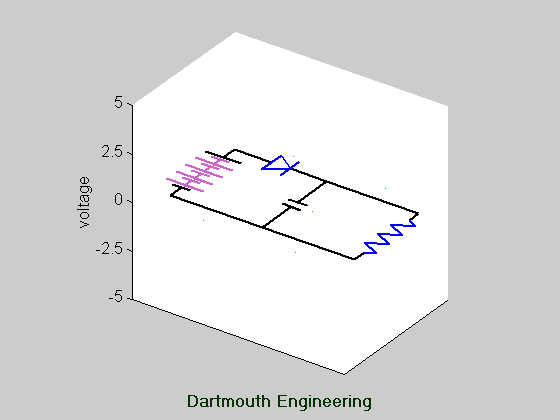
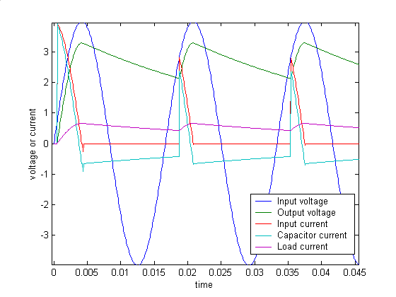

Half-Wave Rectifier with Capacitive Filter, and Waveforms.
Press the "reload" button on your browser to restart the animation.

This circuit takes an ac input voltage (represented by the battery
symbol), and produces a dc voltage across the load, represented by a
resistor.
- Note the large surge of current drawn when the circuit first turns on.
- Smaller, but still significant surges are drawn each time the diode
turns on. Each pulse starts with very high amplitude and gradually
decreases. Can you explain that shape? (Hint: Capacitor
current i C = C dvC/dt.)
- While the diode is off, the resistor and capacitor form a simple RC
circuit.